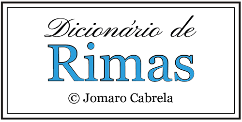

Procura de Rimas
Escreva a palavra para procurar rima:
Tamanho da terminação (sufixo):
2 letras
3 letras
4 letras
5 letras
Procurar Rimas
As rimas aparecerão aqui...
© Jomaro Cabrela / José Rodrigues